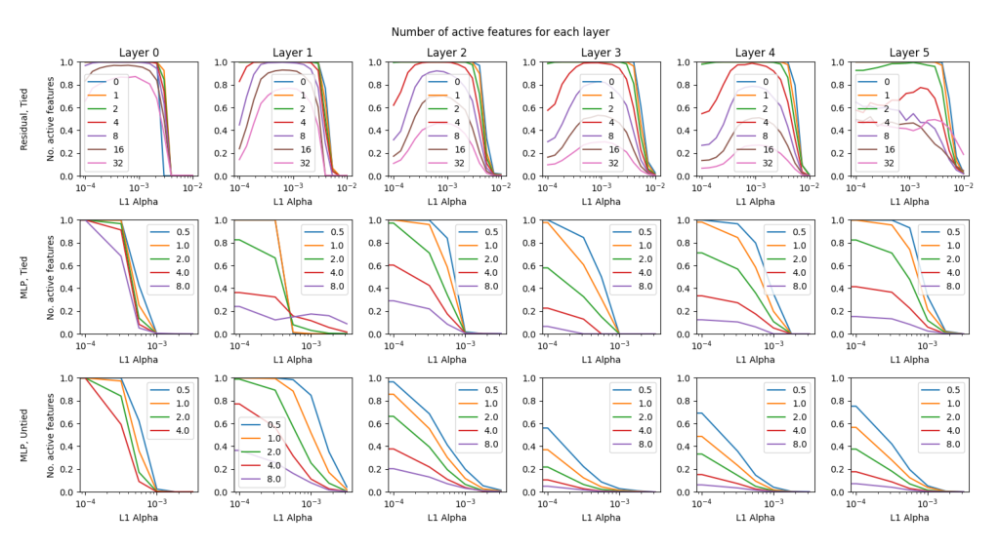

Active-feature fraction vs. L1 sparsity across layers and architectures

How the 3x6 grid is organized
Eighteen small panels arranged three rows by six columns. Columns are layers 0 through 5, held consistent across all three rows. Rows are three different autoencoder configurations: residual-stream with tied encoder/decoder weights (top), MLP sublayer with tied weights (middle), and MLP sublayer with untied, separate encoder/decoder weights (bottom). Inside each panel, the x-axis is the L1 sparsity coefficient alpha on a log scale, the y-axis is the fraction of dictionary features that remain 'active' (defined as firing more than ten times across ten million datapoints), and each colored curve is one dictionary expansion ratio swept across alpha, per that panel's own legend. A naive cross-row comparison is misleading: the residual row's alpha axis spans a different numeric range than the two MLP rows', so a curve's horizontal position cannot be compared straight across rows. In several later-layer residual panels the curves stop decaying smoothly and instead cross and fluctuate; small-print legend values and exact curve identities in these panels are not reliably legible at this crop size and are not read off here.
What the sweep shows
In the residual-stream row, every curve starts near a fraction of 1.0 at low alpha and falls toward 0 as alpha increases, with larger dictionary ratios falling off at smaller alpha than smaller ratios -- bigger dictionaries need less sparsity pressure before some features go quiet. This sweep is what let the paper pick its main-text hyperparameters, alpha = 8.6e-4 for the residual stream and alpha = 3.2e-4 for the MLP, and supports the claim that residual dictionaries stay close to fully alive up to roughly 4x overcomplete (sparse-autoencoders, §"E NUMBER OF ACTIVE FEATURES", p. 17). Both MLP rows look qualitatively different: many curves start well below 1.0 even at the smallest alpha tested, meaning a large fraction of MLP dictionary features are dead before any sparsity penalty is applied at all, and this dead fraction again grows with the dictionary ratio.
Why the residual stream and MLP differ
This sweep is the evidence behind the paper's account of Dead features and its mixed success applying Sparse autoencoders (SAEs) to the SAE training on the MLP sublayer setting: the Dictionary expansion factor (R) and the Sparsity loss (L1 penalty on feature activations) coefficient jointly determine how much of a dictionary stays usable, and the MLP sublayer's non-linearity leaves large regions of input space unused, stranding features there regardless of alpha. This is also part of the motivation for comparing Tied encoder/decoder weights against untied weights specifically on the MLP sublayer, shown directly in the bottom two rows.